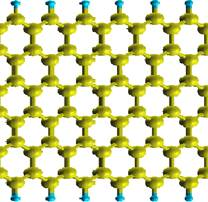
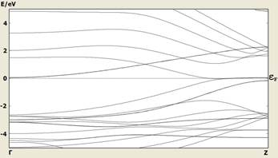
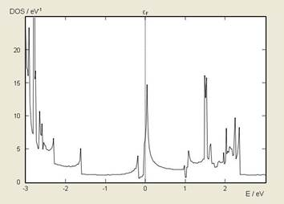
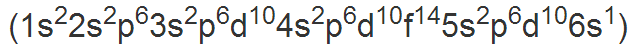
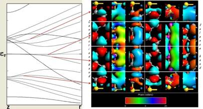
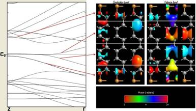
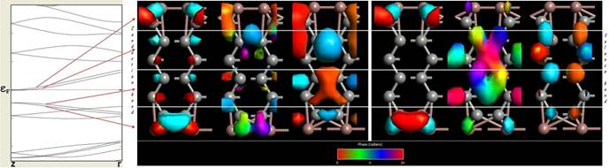

| Volume 1, Issue 2, Year 2013 - Pages 41-46 | View PDF (Full-text) |
| DOI: 10.11159/ijtan.2013.005 | Linked References |
| ISSN: 1929-1248 | |
Analysis of Graphene Nanoribbons Passivated with Gold,
Copper and Indium
Nikolay Delibozov
Technical University of Sofia, 8 Kliment Ohridski Blvd, Sofia, Bulgaria
n.delibozov@ecad.tu-sofia.bg, nikolay_delibozov@yahoo.com
Abstract- This study investigates the effect of edge-passivation on graphene nanoribbons. The geometry of graphene is simple and regular, and infinite, planar structure can easily be created either by hand or by taking a single layer from the crystal structure of graphene. To create a device-like structure, the infinite sheet must be cut into a suitable shape. Such a shape, at least for electronic applications, and it is called graphene nanoribbon (GNR). A pristine graphene monolayer can be cut into elongated strips to form 1D structure, referred to as graphene nanoribbons (GNRs) which can be either metallic or semiconducting depending on the type and width of edges. On the base of series of simulations it is found that elements from Ist, IIIrd and IVth group are used as passivated elements with Armchair and Zigzag nanoribbons instead of Hydrogen. Best characteristics for zigzag nanoribbons are presented by elements from Ist group. All experiments are made with Gold and Copper. For armchair nanoribbons, best characteristic are shown by elements from IIIrd group. The experiment is made with Indium. For nanoribbon with zigzag shaped edge is used DFT (Density Functional Theory) with LDA (Local Density Approximation). The chiral index of such nanoribbon is (3, 3). For the calculations of armchair nanoribbon is used Extended Hückel method. The chiral index of such nanoribbon is (3, 0). In both cases the k-point are set to 1 x 1 x 100 for na, nb and nc, respectively. For nanoribbons with zigzag shaped edges, DFT calculations show that edge-state bands at Fermi level (EF) rise to a very large Density of States (DOS) at EF, while Density of States of the armchair nanoribbons shows an energy gap around Fermi level. After Band Structure and Density of State, Bloch State is calculated and plot. Bloch States can be used to investigate the symmetry of certain bands and how this may be releated to the transport properties. Looking at the respective Bloch function, the wave function at G and Z are real and there is a distinct difference between valence and conduction band Bloch functions. These findings can be useful for the prospective GNR-based devices.
Keywords: Graphene nanoribbon, electronic structure, density of states, bloch states, armchair and zigzag.
© Copyright 2013 Authors - This is an Open Access article published under the Creative Commons Attribution License terms. Unrestricted use, distribution, and reproduction in any medium are permitted, provided the original work is properly cited.
Date Received: 2013-09-24
Date Accepted: 2013-11-28
Date Published: 2013-12-30
1. Introduction
In present work, a theoretical study is conducted to investigate Band Structure, Density of States and Bloch States of Armchair and Zigzag GNRs with various edge passivation, including Gold, Copper and Indium.
As is well known Graphene is a two-dimensional monoatomic layer system which has attracted great research interest due to its remarkable electronic properties (Figure 1).
Its honeycomb lattice can be described in terms of a sp2 hybridized network of carbon atoms which essentially controls the characteristic p electronic structure of graphene [3].
One of the most basic transport systems that can be made with graphene is a perfect, infinite zigzag nanoribbon. Such nanoribbons are metallic and display no elastic dissipation, i.e. perfect conductivity.
Graphene nanoribbons (GNRs) are very interesting systems for novel electronics applications. Depending on the shape of the nanoribbon edge, the nanoribbons can have metallic or semiconducting characteristics [1].
Graphene nanoribbons (GNRs) have one-dimensional structure with hexagonal two-dimensional carbon lattices, which are stripes of graphene. Due to their various edge structures, GNRs present different electronic properties ranging from normal semiconductors to spin-polarized half metals, which open the possibility of GNRs to be applied in the electric devices [4].
While investigating the Band Structure of pure graphene, the focus is on graphene nanoribbons (GNRs), which are finite, narrow strips of graphene, cut out from the infinite 2D sheet. There are two primary ways to cut out such a nanoribbon, and these two structures are known as Armchair or Zigzag nanoribbons (Figure 2.).

It can be noticed that, an armchair nanoribbon is an unrolled zigzag nanotube. Armchair nanoribbons are predicted to be semiconducting, and in this work will be estimated the Band Structure of such a nanoribbon to confirm this. Also will be estimated the Density of State and Bloch States. Bloch States can be used to investigate the symmetry of certain bands and how this may be related to the transport properties.
2. Geometric Structures of GNRs
The typical width of GNR is of nanometers. GNR can be divided into two types: Armchair and Zigzag (Figure 3.).
Adopting the standard convention, the width of armchair GNRs is classified by the number of dimer lines (Na) across the ribbons. Likewise, the one of zigzag GNRs is classified by the number of zigzag chains (Nz) across the nanoribbons (Figure 3.). Perpendicularly to the direction of defined width, GNRs repeat their geometric structures, and form one-dimensional periodic structures. Since GNRs are stripes of graphene, edge atoms are not saturated. Active edge states become an important factor to determine the edge structures. For armchair GNRs, there is no any edge reconstruction, and the planar patterns are kept. While for zigzag GNRs, it is unexpectedly found that the zigzag edge is metastable, and reconstructions spontaneously take place at high temperature.
By calculating the Band Structures and Densities of States (DOS) the system can be classified as metallic, insulator or semi-metallic [5].
3. Graphene Nanoribbons
All armchair GNRs are semiconductors with energy gaps, which decrease as a function of increasing nanoribbon width. No magnetism has been found in armchair GNRs.
Although armchair GNRs have three typical families (corresponding to Na = 3p, 3p+1, 3p+2, respectively) with distinguished energy gaps, they have band shapes. As an example, the Band Structure of armchair GNR with Na = 13 is shown in Figure 4 and there are four important sub-bands which dominate the electronic behaviors of armchair GNRs.
As a comparison to the armchair, zigzag nanoribbons have localized edge states which are ferromagnetically ordered, but with opposite spin orientation at the two edges which makes them antiferromagnetically coupled. These properties, along with the ballistic electronic transport, and quantum Hall effect, cause graphene nanoribbons to be promising candidates for building blocks of future nanoelectronic and spintronic devices and also chemical sensors and electrochemical switches [2]. Modification of electronic structure of nanoribbons by chemical functionalization is an effective way to make them efficient for their applications.
4. Computational Model
A lot of chemical elements are observed and it is found that elements from Ist, IIIrd and IVth group can be used as passivated elements with armchair and zigzag nanoribbons instead of Hydrogen. For zigzag nanoribbons, elements from Ist group show the best characteristics which are similar to those when Hydrogen is used. The experiments are made with Gold and Copper. While for armchair nanoribbons, elements from IIIrd group show the best characteristics. The experiment is made with Indium.
The edge carbon atoms of zigzag GNRs are passivated by Gold in the first case and in the second case a Copperis used, which leads to the bonding of carbon atoms at the edges different with other carbon atoms. As a consequence, the bond length of carbon atoms at the edges are longer than that in the middle of nanoribbons, and open the energy gaps of zigzag GNRs.
For nanoribbon with zigzag shaped edges DFT (Density Functional Theory) with LDA (Local Density Approximation) is used. The chiral index of such a nanoribbon is (3, 3). When Band Structure is calculated the unit cell should be as small as possible. This reduces calculation time and makes it easier to analyze the Band Structure (Figure 5). The k-points are set to 1 x 1 x 100 for na, nb and nc, respectively.

The edge carbon atoms of armchair GNRs are passivated by Indium, which leads to the bonding of carbon atoms at the edges different from other carbon atoms. As a consequence, the bond length of carbon atoms at the edges are shorter than that in the middle of nanoribbons, and open the energy gaps of armchair GNRs.
In armchair nanoribbon is used the Extended Hückel method for the calculations. The chiral index of such a nanoribbon is (3, 0). The k-points are set to 1 x 1 x 100 for na, nb and nc, respectively. The Band Structure is shown in Figure 6.
For nanoribbons with zigzag shaped edges, without considering spin states, DFT calculations have shown that a set of doubly degenerate flat edge-state bands at Fermi level (EF) rise to a very large Density of States (DOS) at EF (Figure 7).

Density of States of the armchair nanoribbons shows an energy gap around Fermi level (Figure 8).
This energy gap depends on the width of the nanoribbons and decreases by increasing the width.
After the calculation of Band Structure and Density of States of armchair and zigzag nanoribbons, passivated with Gold, Copper and Indium, respectively, Bloch State is calculated and plot. Bloch States can be used to investigate the symmetry of certain bands and how this may be related to the transport properties.
The considered nanoribbon consists of eight Carbon and two Gold atoms in each unit cell. A Carbon atom contributes four valence electrons (2s22p2) and the Gold one - seventy nine , thus there are 111 electrons in the system. Each band is doubly degenerated and hence there will be 55 valence bands. Therefore, the band index of the highest valence band will be 54 and the index of the lowest conduction band will be 55. The visualization of six different Bloch States can be seen on Figure 9a.
The considered nanoribbon consists of eight Carbon and two Copper atoms in each unit cell. A Carbon atom contributes four valence electrons (2s22p2) and the Copper one - twenty nine (1s22s2p63s2p6d104s1), thus there are 61 electrons in the system. Each band is doubly degenerated and hence there will be 30 valence bands. Therefore, the band index of the highest valence band will be 29 and the index of the lowest conduction band will be 30.The visualization of six different Bloch States can be seen on Figure 9b.
The considered nanoribbon consists of eight Carbon and two Indium atoms in each unit cell. A Carbon atom contributes four valence electrons (2s22p2) and the Indium one - forty nine (1s22s2p63s2p6d104s2p6d105s2p1), thus there are 81 electrons in the system. Each band is doubly degenerated and hence there will be 40 valence bands. Therefore, the band index of the highest valence band will be 39 and the index of the lowest conduction band will be 40. The visualization of six different Bloch States can be seen on Figure 10.


Figure 9. Bloch States of zigzag GNRs ((a) - on top passivated by Gold - and (b) - on bottom passivated by Copper).
On the figs. 9a, 9b and 10 the left and right group of structures displays the conduction and valence band, respectively. From left to right in each group of structure k point is 0, 0.35 and 0.5.

Figure 10. Bloch States of armchair GNR passivated by Indium.
Looking at the respective Bloch functions, first note is that the wave functions at G and Z are real (as expected), and second that there is a distinct difference between valence and conduction band Bloch functions. The occupied valence band states appear to be "connected" across the ribbon. At Z, the states become localized towards the edges of the ribbon.
5. Conclusion
With the discovery of graphene and, promptly, graphene nanoribbons (GNRs) there have been new frontiers for carbon science. Graphene is very interesting due to its extraordinary electrical, thermal and mechanical properties, which may lead to many applications in electronic devices, sensors and composites. GNRs can be synthesized by mechanical cleavage followed by lithography, etching, chemical stripping and chemical vapor deposition. Recently, some new methods have been developed to produce atomically smooth edges within GNRs.
In this paper passivation of armchair (with chiral index 3, 0) and zigzag (with chiral index 3, 3) graphene nanoribbon with Gold, Copper and Indium was investigated. It showed that elements from Ist and IIIrd group and more specially Au and Cu for Zigzag and In for Armchair nanoribbons can be used instead of Hydrogen as passivated elements. The characteristics are similar to those when Hydrogen is used. When Band Structure is calculated the unit cell should be as small as possible in order to reduce calculation time and makes it easier to analyze the Band Structure. Density of States of these structures is at Fermi level for Zigzag nanoribbons and around Fermi level for Armchair nanoribbons.
It is well known that two distinguished states, metallic and insulating states are necessary to develop reliable electric devices. Thus, for the potential applications based on Graphene, GNRs greatly extend the functionality of Graphene.
Bloch States can be used to investigate the symmetry of certain bands and how this may be related to the transport properties. There is a difference between valence and conduction band Bloch functions. The occupied valence band states appear to be "connected" across the ribbon.
Armchair GNRs are non spin-polarized materials while for Zigzag GNRs, the situation is more complicated and interesting because of the spin-polarized solutions.
Graphene nanoribbons are promising candidates for use in many advanced applications in prospective electronic devices. They have amazing properties and can be used in many fields of the electronics. Recently, graphene nanoribbons are used in nanoFET transistors where they are wrapped around gate.
To build future nanodevices based on GNRs, the capability to control GNRs' electronic properties is highly desirable. One of the possible and effective ways is to apply external strain.
When graphene nanoribbons are passivated with Gold, Copper and Indium they do not change their properties and characteristics. It can be noticed that passivated nanoribbons have more stable structure.
An edge passivation is alternative method for tuning the band gap in the Armchair and Zigzag GNRs. Some remarkable properties of graphene reported so far include high values of its Young's modulus (~1100 GPa), fracture strength (125 GPa), thermal conductivity (~5000 W m-1K-1), mobility of charge carriers (200,000 cm2 V-1 s-1) and specific surface area (calculated value, 2630 m2 g-1), and fascinating transport phenomena such as the quantum Hall effect.
References
[1] K. Imain, G. Jafari, M. Reza Abolhasani, "Electronic Structure Calculation of Absorbate Gas Molecules on an Armchair Graphene Nanoribbon." 2012, ISRN Condensed Matter Physics. View Article
[2] N. Gorjizadeh and Y. Kawazoe "Chemical Functionalization of Graphene Nanoribbons" 2010, Journal of Nanomaterials, Special Issue on Graphene. View Article
[3] N. Gorjizadeh, Y. Kawazoe, A. A. Farajian "Electronic and Transport Properties of Defected Graphene Nanoribbons" 2011, Physics and Applications of Graphene – Theory. Tohoku University, Japan. View Article
[4] E. Kann, Z. Li, J. Yang "Graphene Nanoribbons: Geometric, Electronic, and Magnetic Properties, Physics and Applications of Graphene – Theory" 2011, University of Science and Technology of China, China. View Article
[5] X. Zhong, R. Pandey, S.P. Karma "Stacking dependent electronic structure and transport in bilayer graphene nanoribbons" 2012, Department of Physics, Michigan Technological University, USA, 784 - 790. View Article